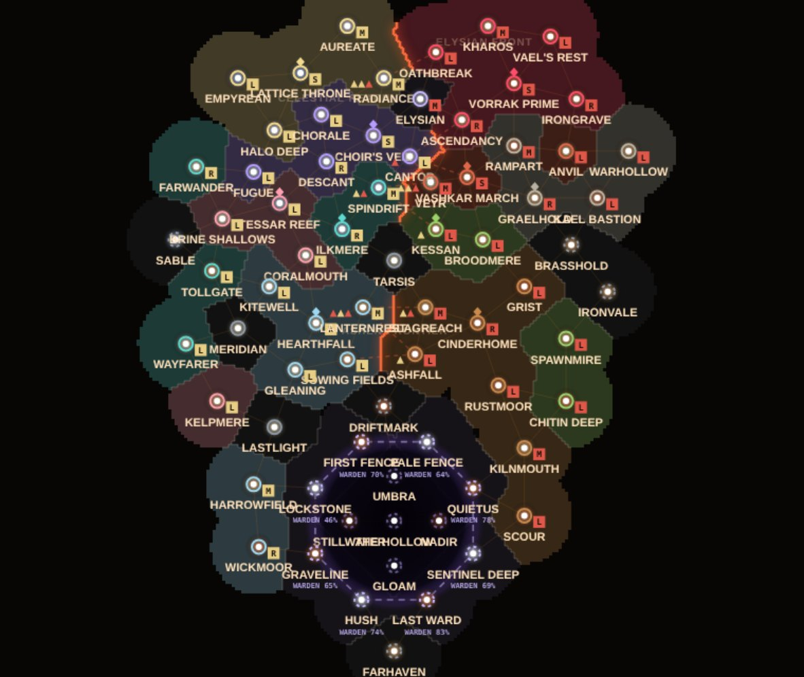
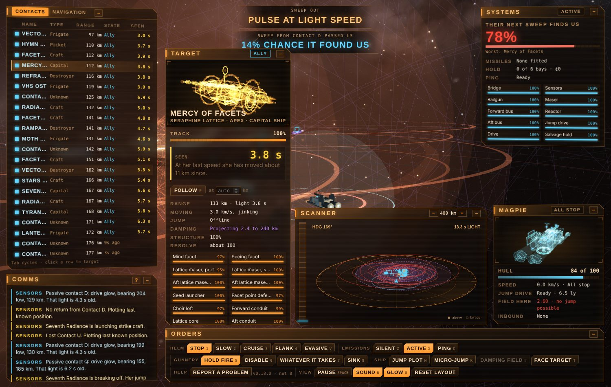

A light-lag space combat game · v0.19.0
Every ship you see is where she was when her light left her.
Captain a salvage cutter through the War of Shattered Stars. Hunt ships a tier above you, strip their parts, and choose a side in a war that keeps moving whether you are there or not.
Free, nothing to install. Needs a desktop browser (Chrome, Edge or Firefox) and a graphics card. Your career is saved in your browser. Playing with friends needs the Windows app.
The War of Shattered Stars
For nearly two centuries the Concord and the Dominion have fought over the Elysian Gate, an ancient structure buried in the well of a dead star. Neither can win. Neither can afford to lose. And something beneath the battlefields is beginning to wake.

“A thousand worlds. A million voices. One future.”
“Peace is the reward of strength. Weakness is an invitation to destruction.”
How it plays
Sensors, guns and jump flashes all travel at the speed of light. Out at a few hundred kilometres your picture of a ship is seconds old, and she has moved since. Fly, hide and shoot on that.
Every contact is an echo. Sweep to find her, ping to see her clearly and be seen, or go silent and drift.
The Magpie starts on human scrap. Beat a ship a tier above you, strip her parts, and fit them. Every step up doubles the danger.
Both powers post bounties at Tarsis Ring. Work for one and the other starts hunting you. Get infamous enough and everyone does.
Architect Remnants drink the energy of every battle near them. Wake one and both fleets turn on it. What sits at its heart is worth a fortune.

With friends
One captain hosts the war on their PC, and friends join from theirs, each in their own ship, sharing one galaxy and one front.
Everything in the game, on this page. Your career and your war are kept in this browser.
The host runs Valkyrie Host; friends run Valkyrie and type the host's address. The apps are shared directly by the developer for now. Ask whoever sent you here.